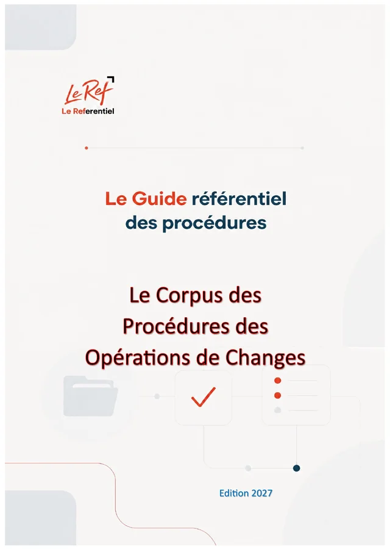

Maroc · CHG · Édition 2027
Procédures et réglementation des changes
Le Corpus des Procédures des Opérations de Changes
La réglementation des changes au Maroc, processus par processus : importer et payer, exporter et rapatrier, couverture des risques, succursales, CFC, offshore, opérations des personnes physiques, activité de change de devises, déclarations et sanctions.
- 73paragraphes
- 19chapitres
- 2parties
- 20fichiers JSON
- 48pages (PDF)
Disponible prochainement (option d'achat)
Pages préliminaires et annexes
Contenu
73 paragraphes · 19 chapitres · un fichier JSON par chapitrePartie 1La réglementation des changes, processus par processus
68 paragraphes
1.12 Exploiter une activité de change de devises
- 1-110Exploiter une activité de change de devises — présentation
- 1-111Qui peut exercer : les quatre catégories
- 1-112Les conditions d'agrément
- 1-113Du démarrage à l'arrêt : le cycle de vie
- 1-114Les opérations au guichet
- 1-115Gestion de l'encaisse et cessions bancaires
- 1-116Pièces des modifications déclaratives
- 1-117La Plateforme unique de change de devises